Navigation System: Description and Operation
Navigation SystemSystem Description
Overview
The navigation system is a highly sophisticated, hybrid locating system.
The navigation unit uses global positioning system (GPS) satellite signals, internal yaw and vehicle speed inputs, and a map database to show where the vehicle is and to help guide you to a desired destination.
The navigation unit's GPS receiver receives signals from the GPS, a network of 24 satellites in orbit around the earth. By receiving signals from several of these satellites, the navigation system can determine the latitude, longitude, and elevation of the vehicle.
Signals from the system's yaw rate sensor (inside the navigation unit) detects turns, and the ECM/PCM vehicle speed pulse (VSP) and reverse signal enable the system to keep track of the vehicle's speed and direction of travel. The advantage of this hybrid system is that the system can track your position if either the GPS signal or the vehicle speed signal is missing. For instance, when in a tunnel (no GPS), the speed signal is used to update your position on the map. Alternately, while the vehicle is being transported on a ferry, GPS signals can show the vehicle position on the map as it crosses the water.
The navigation system uses the location, direction, and speed information to display the appropriate map and calculate a route to the destination entered. As you drive to a destination, the system provides both visual and audio guidance. Audio guidance is sent to the audio unit, and an RGB graphics color signal is sent to the navigation display.
This navigation system also has voice recognition that allows voice control of most of the navigation, and audio functions. The voice control switches (TALK and BACK buttons on the steering wheel) activate the voice control system. The microphone on the ceiling receives your voice commands. For more information on this feature, consult the navigation owner's guide.
The illumination signal is used by the navigation unit to automatically switch the display mode between the "Night" and "Day" display modes. When the headlights are on, the dash brightness control setting "full brightness" overrides the "Night" display mode, and allows a daytime navigation display with the lights on.
When the navigation system is giving voice guidance commands, the front speakers are muted.When the voice control system is being used (TALK button pressed), all of the speakers are muted.
The internal GA-Net II bus passes information back and forth between the navigation display, the navigation unit, and the audio system components. The information passed on this bus are touch button commands, audio muting signal, audio (radio and XM), and any open in these bus lines can affect the navigation system or other audio accessory operation.
The clock on the navigation display is set and maintained by the navigation unit. The time is automatically adjusted for daylight savings, and time zone changes while driving. The time can be adjusted in setup.
Additional information is available about the navigation components following the System Diagram. A glossary of terms that are used throughout this section follows the detailed information.
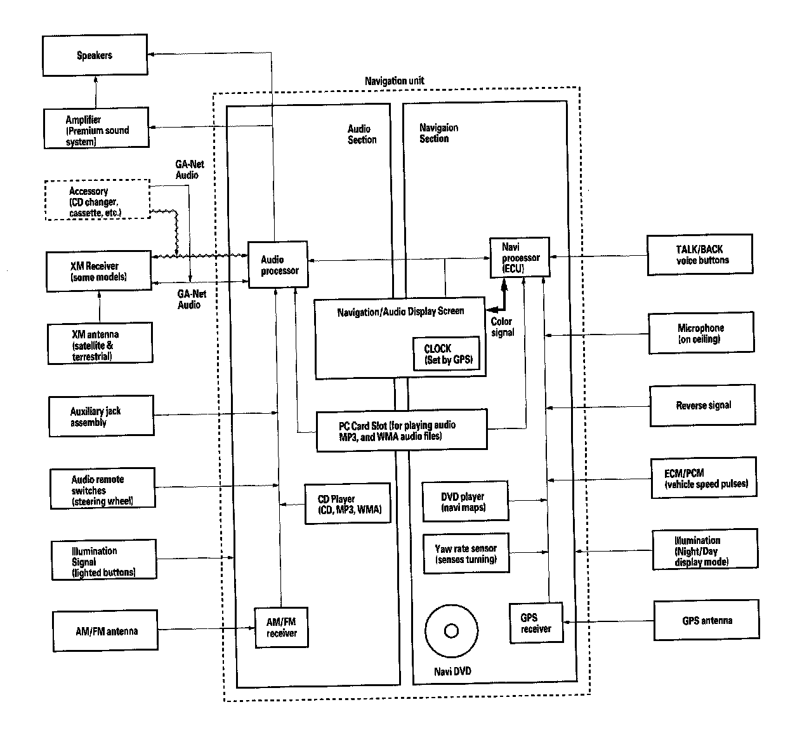
The Navigation Users Guide in the glove box covers all of the system functions and settings. Use this as a resource when evaluating a customer concern.
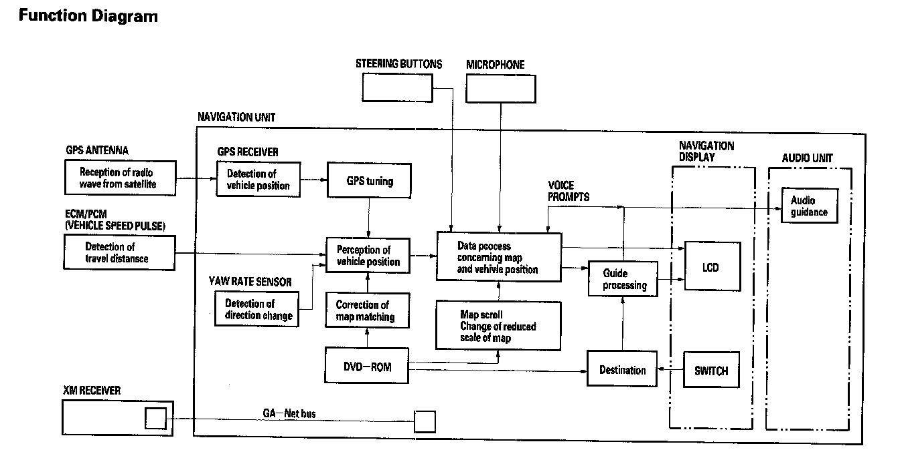
Navigation Function
The navigation system is composed of the navigation unit, the ECM/PCM (vehicle speed signal), the GPS antenna, microphone, voice control switch, XM receiver, and the climate control unit. These units communicate with each other on the GA-Net bus.
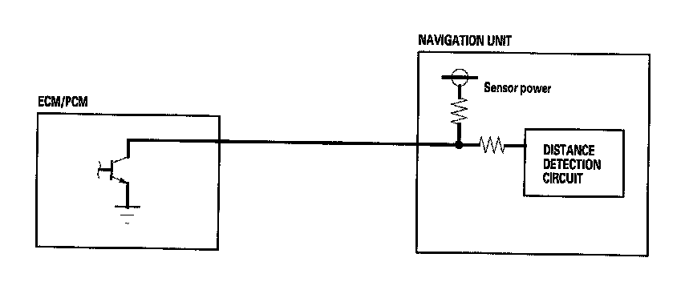
Vehicle Speed Pulse
The vehicle speed pulse is sent by the ECM/PCM. The ECM/PCM receives a signal from the countershaft speed sensor, then it processes the signal and transmits it to the speedometer and other systems.
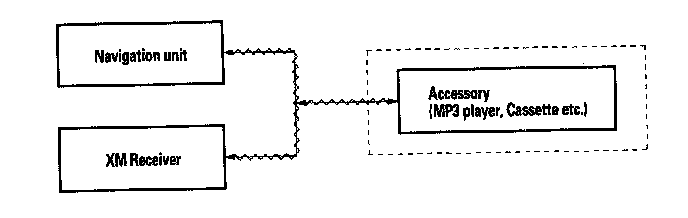
GA-Net Bus Configuration
The GA-Net bus passes audio and navigation commands throughout the navigation and audio components. These commands include audio/XM selections by voice, and XM station and music title names. Because the entire bus is "daisy chained" between components (see diagram below), any open or short in the GA-Net bus harness will cause any or all of these functions to become inoperative. The addition of any factory audio accessory must maintain the continuity of the GA-Net bus by installing the "Y" cable included with the accessory kit.
Yaw Rate Sensor
The yaw rate sensor (located in the navigation unit) detects the direction change (angular speed) of the vehicle. The sensor is an oscillation gyro built into the navigation unit.
Sensor Element Structure
The sensor element is shaped like a tuning fork, and it consists of the piezoelectric parts, the metal block, and the support pin. There are four piezoelectric parts: one to drive the oscillators, one to monitor and maintain the oscillation at a regular frequency, and two to detect angular velocity. The two oscillators, which have a 90-degree twist in the center, are connected at the bottom by the metal block and supported by the support pin. A detection piezoelectric part is attached to the top of each oscillator. The driving piezoelectric part is attached to the bottom of one oscillator, and the monitoring piezoelectric part is attached to the bottom of the other oscillator.
Oscillation Gyro Principles
The piezoelectric parts have "electric/mechanical transfer characteristics." They bend vertically when voltage is applied to both sides of the parts, and voltage is generated between both sides of the piezoelectric parts when they are bent by an external force. The oscillation gyro functions by utilizing this characteristic of the piezoelectric parts and "Coriolis force." (Coriolis force deflects moving objects as a result of the earth's rotation.) In the oscillation gyro, this force moves the sensor element when angular velocity is applied.
Operation
1. The driving piezoelectric part oscillates the oscillator by repeatedly bending and returning when an AC voltage of 6 kHz is applied to the part, The monitoring-side oscillator resonates because it is connected to the driving-side oscillator by the metal block.
2. The monitoring piezoelectric part bends in proportion to the oscillation and outputs voltage (the monitor signal). The navigation unit control circuit controls the drive signal to stabilize the monitor signal.
3. When the vehicle is stopped, the detecting piezoelectric parts oscillate right and left with the oscillators, but no signal is output because the parts are not bent (no angular force).
4. When the vehicle turns to the right, the sensor element moves in a circular motion with the right oscillator bending forward and the left oscillator bending rearward. The amount of forward/rearward bend varies according to the angular velocity of the vehicle.
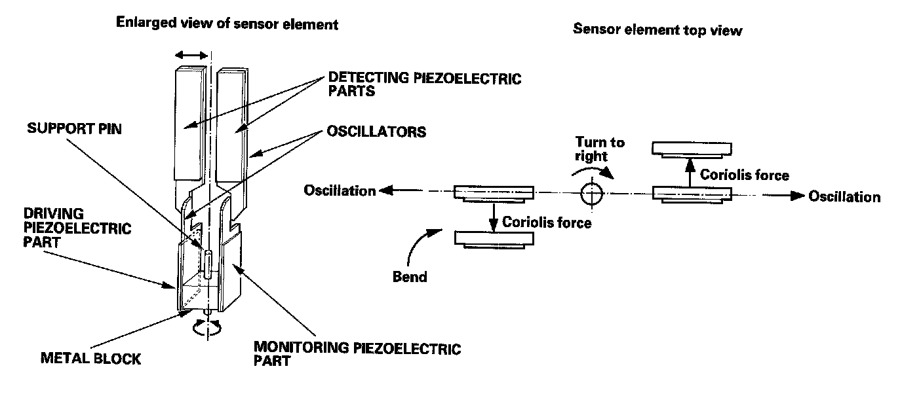
5. The detecting piezoelectric parts output voltage (the yaw rate signal) according to the amount of bend. The amount of vehicle direction change is determined by measuring this voltage.
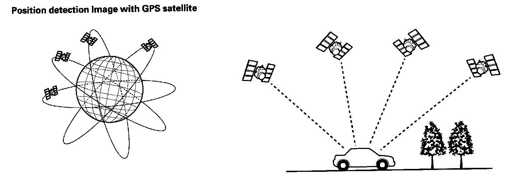
Global Positioning System (GPS)
The global positioning system (GPS) enables the navigation system to determine the current position of the vehicle by using the signals transmitted from the satellites in orbit around the earth. The satellites transmit the satellite identification signal, orbit information, transmission time signal, and other information. When the GPS receiver receives a signal from four or more satellites simultaneously, it calculates the current position of the vehicle based on the distance to each satellite and the satellite's positions in its respective orbit.
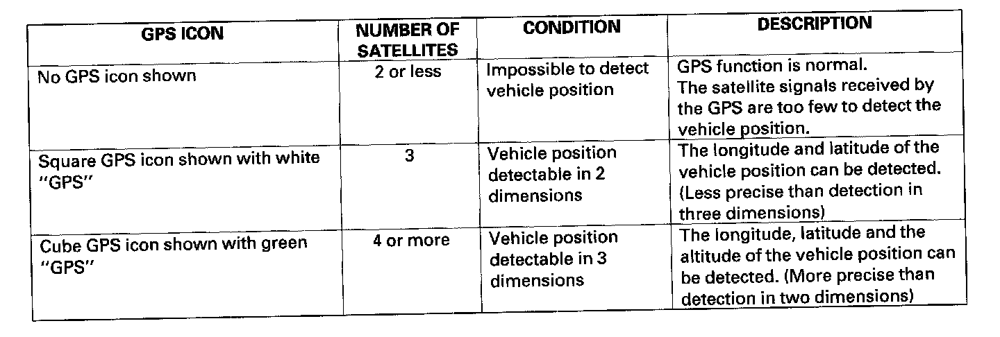
Precision of GPS
The precision of the GPS varies according to the number of satellites from which signals are received and the view of the sky. The precision is indicated by the color and shape of the GPS icon shown on the display.
GPS Antenna
The GPS antenna amplifies and transmits the signals received from the satellites to the GPS receiver.
GPS Receiver and Clock
The GPS receiver is built into the navigation unit. It calculates the vehicle position by receiving the signal from the GPS antenna. The current time vehicle position and signal reception condition is transmitted from the GPS receiver to the navigation control unit to adjust vehicle position.
Navigation Unit
The navigation unit calculates the vehicle position and guides you to the destination. The unit performs map matching correction, GPS correction, and distance tuning. It also controls the menu functions and the DVD-ROM drive, and interprets voice commands. With control of all these items, the navigation unit makes the navigation picture signal, then it transmits the signal to the navigation display and audio driving instructions to the audio unit.
Calculation of Vehicle Position
The navigation unit calculates the vehicle position (the driving direction and the current position) by receiving the directional change signals from the yaw rate sensor and the travel distance signals from the PCMs vehicle speed pulse (VSP) signal.
Map Matching Tuning
The map matching tuning is accomplished by indicating the vehicle position on the roads on the map. The map data transmitted from the DVD-ROM is checked against the vehicle position data, and the vehicle position is indicated on the nearest road. Map matching tuning does not occur when the vehicle travels on a road not shown on the map, or when the vehicle position is far away from a road on the map.
GPS Tuning
The GPS tuning is accomplished by indicating the vehicle position as the GPS's vehicle position. The navigation unit compares its calculated vehicle position data with the GPS vehicle position data. If there is large difference between the two, the indicated vehicle position is adjusted to the GPS vehicle position.
Distance Tuning
The distance tuning reduces the difference between the travel distance signal from the VSP and the distance data on the map. The navigation unit compares its calculated vehicle position data with the GPS vehicle position data. The navigation unit then decreases the tuning value when the vehicle position is always ahead of the GPS vehicle position, and it increases the tuning value when the vehicle position is always behind the GPS vehicle position.
Route Guidance
The navigation unit can calculate different routes to a selected destination. You have five options:
- Direct Route - Calculate a route that is the most direct.
- Easy Route - Calculate a route that minimizes the number of turns needed.
- Minimize Freeways - Calculate a route that avoids freeway travel. If that is not possible, keep the amount of freeway travel to a minimum.
- Minimize Toll Roads - Calculate a route that avoids, or minimizes travel on toll roads.
- Maximize Freeways - Calculate a route that uses freeways as much as possible.
Audio Guidance
The navigation unit transmits audio driving instructions before entering an intersection or passing a junction. The audio instructions come through the audio unit to the front speakers.
NOTE: The front speakers are muted whenever the navigation system is giving guidance commands, and all of the speakers are muted when the voice control system is being used.
DVD-ROM
The map data (including all scale rates) is stored in the DVD-ROM" The map data includes:
- Road distances, road widths, speed limits, traffic regulations, passing time at junction, distances to junctions, and the driving instructions for audio guidance.
- Latitude and longitude GPS.
Audio Unit (Built in the navigation unit)
The audio unit receives the audio driving instructions from the navigation unit, and transmits the instructions through the front speakers even when the audio system is in use.
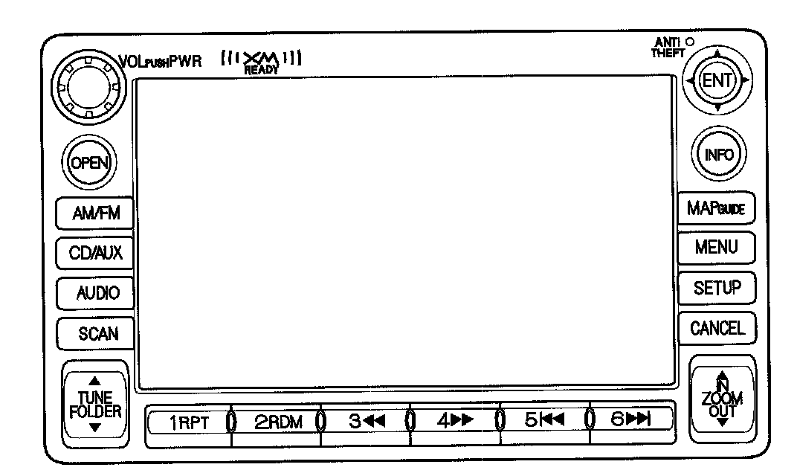
Navigation Display
The navigation display uses liquid crystal display (LCD). The LCD is a 6.5-inch-diagonal, thin film transistor (TFT), stripe type with 65,536 color, The color film and fluorescent light are laid out on the back of the liquid crystal film. The touch sensor on the front of the LCD consists of a touch sensitive resistive membrane with an infinite number of possible touch locations.
Microphone
The microphone (on the ceiling, near the front map light) receives voice commands and transmits them to the navigation unit for interpretation.
TALK Button
Activates the voice control system in the navigation unit to accept voice commands.
BACK Button
Returns the display to the previous screen (similar function as the CANCEL button).
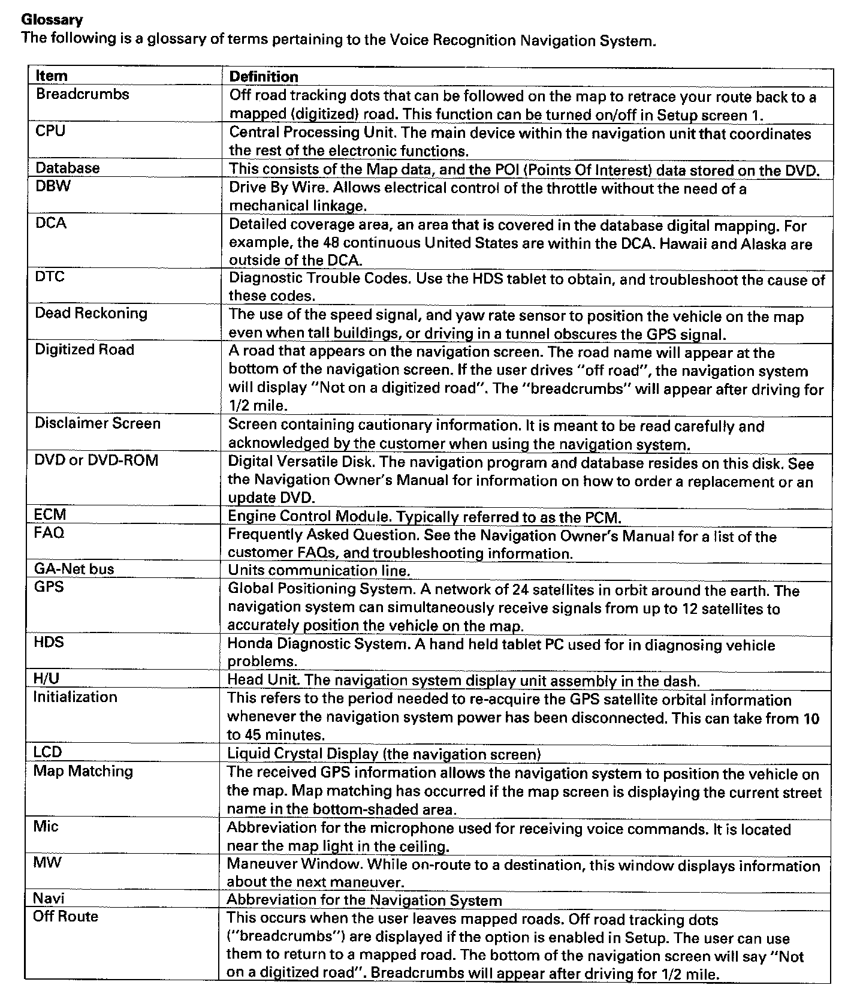
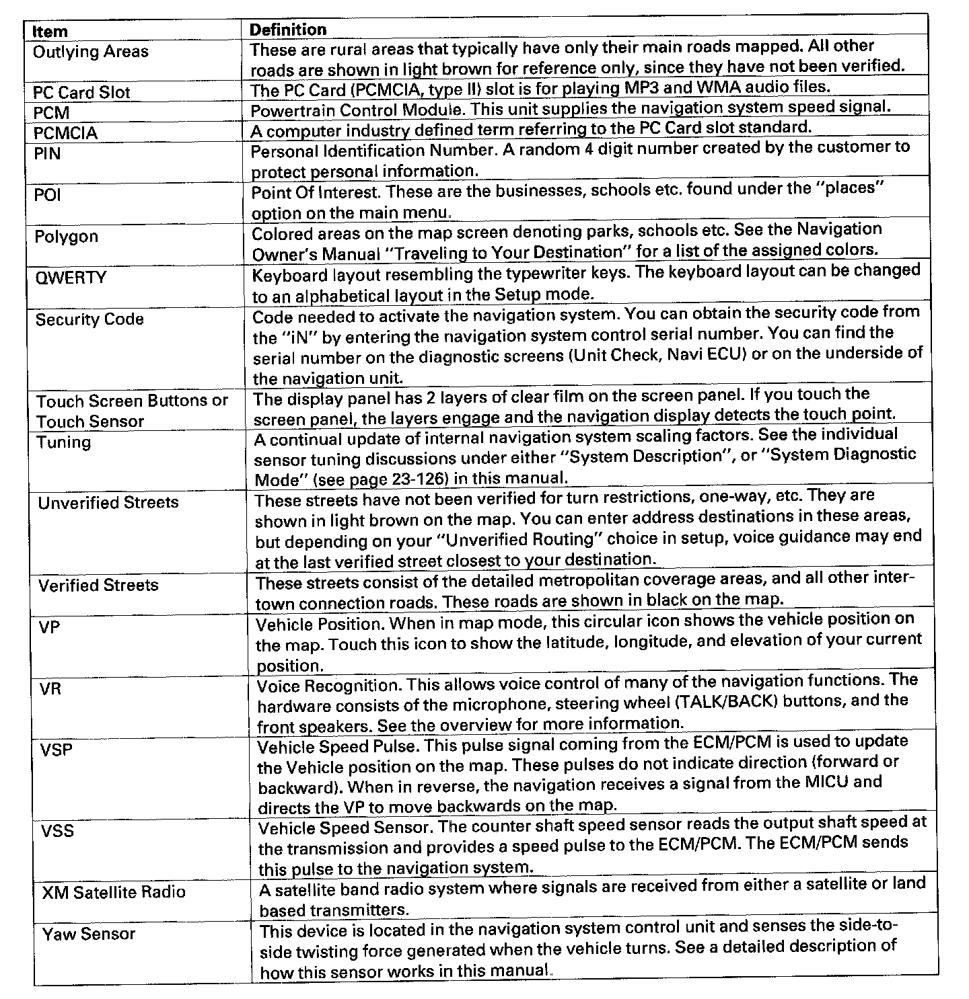
Glossary
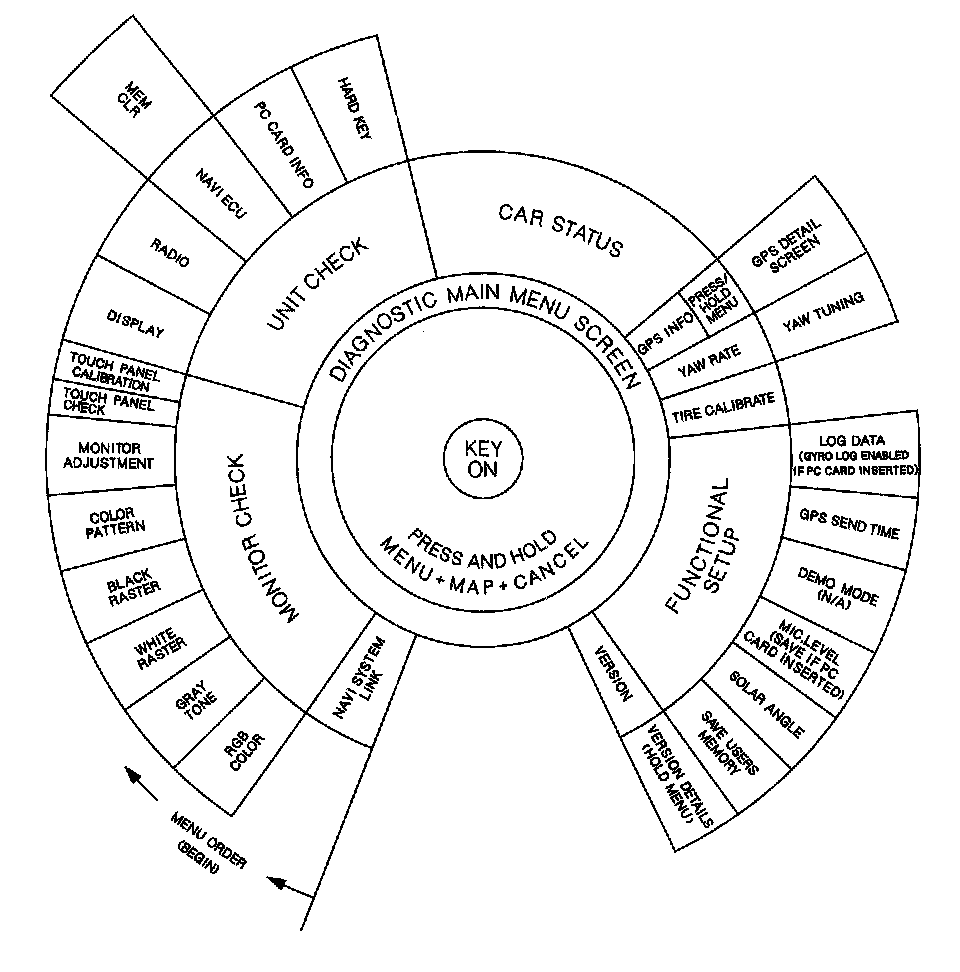
Diagnostic System Diagram
This diagram shows an overview of the navigation diagnostic features starting at the center and working outward in layers. The diagram starts with "Key On." Next the diagram shows two ways to get the diagnostic main menu:
- By starting the vehicle with the SCS connector plugged in, you will enter the diagnostic "System Links" screen. Touch "Return" to get the main diagnostic menu.
- From any of the navigation Map or Menu screens, press and simultaneously hold the keys Menu Map Cancel.
Finally, the diagram shows the available diagnostic menu choices, starting at the bottom left, and moving clockwise. In most cases, do not clear or change settings in any diagnostic screen unless instructed to do so in the explanation, or by the factory. If the factory asks you to insert a PCMCIA memory card into the "PC Slot," then the features specified on the diagram as "(Card)" are available.
Navigation Unit Inputs And Outputs For Connector A (17P):

Navigation Unit Inputs and Outputs for Connector A (17P)
Navigation Unit Inputs And Outputs For Connector C (12P):

Navigation Unit Inputs and Outputs for Connector C (12P)
Navigation Unit Inputs And Outputs For Connector C (12P):

Navigation Unit Inputs and Outputs for Connector O (5P)
Navigation Unit Inputs And Outputs For Connector H (2P):

Navigation Unit Inputs and Outputs for Connector H (2P)
Navigation System Connector Locations:
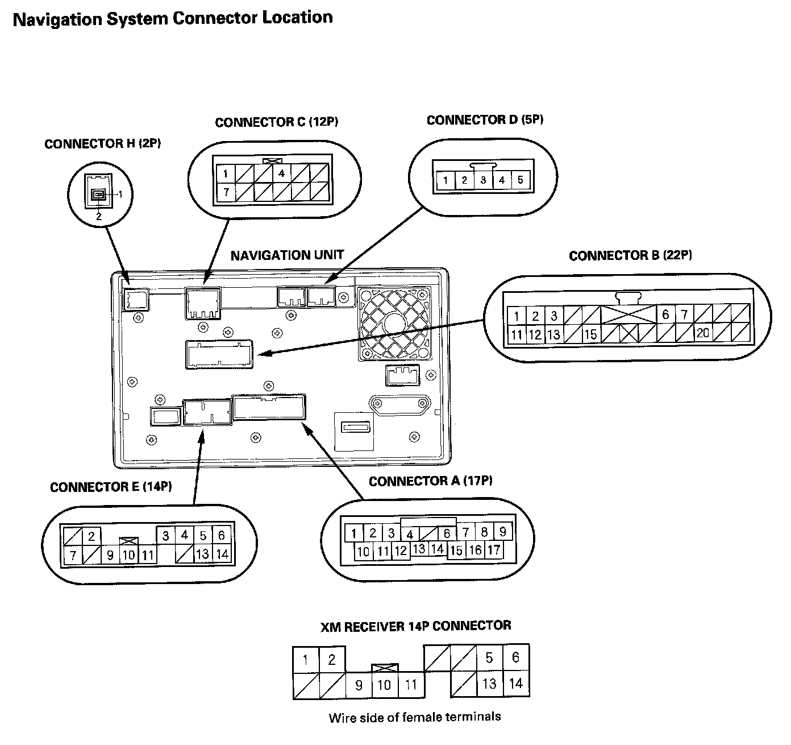
Navigation System Connector Location